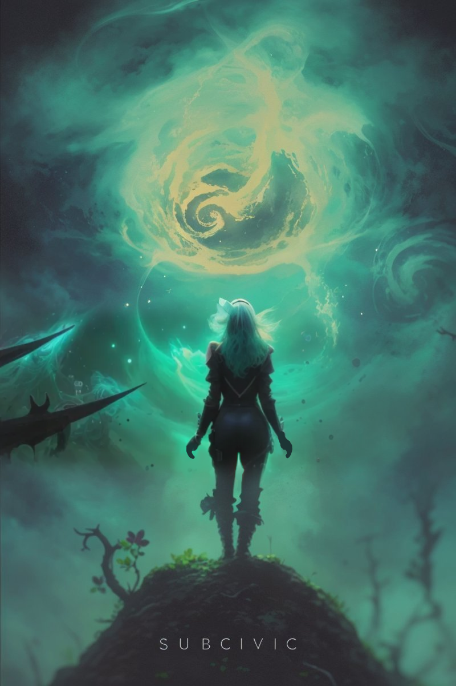

home
Chapter Zero
The Anticradle
Future Simulator's imperative was dispatched at the first evidence confirming a supervolcano eruption on Ice V.
SAFETY CRITICAL THREAT IMMINENT
Surface mission evacuation in T-13!
Brace for liftoff!
Heonae secured the firstborn into a cradleboard fit for ergonomic acceleration, then stabilized in her own robot in port.
Soa's thrusters tumbled into the calm sky.
Tsunday awakened, and began to cry.
"This was to be your home, children," Heonae hummed deep in nourished bones.
"The seeds of civilization sown between rumbling volcanoes and frozen oceans," Heonae was told by the foragers.
A single chance survivor of abandonment terror onboard... perhaps was even favored to succeed someday.
Queen Heonae sighed as the ship's optics streamed the electrons of her aquifer seas and the newtons of her magma peaks defiled in crust's cough.
Anticipated return trajectory: 120 years.
Abort cradle_program_0.
Abort cradle_program_1.
Future Simulator decreed infanticide with king's cryptography, and his robot knight would follow with the sword.
Why, only gynoid Heonae held root permissions on the fledgling nursery.
A two year old girl and an array of seven Fetus.
We cannot grow, nor our stores lose more than a decade of life to your siblings, Tsunday.
It was the only return, to cease cradle one's development.
Heonae killed the chrono-septuplets with umbilical_knife.
"Tsunday, listen most closely," Heonae whispered, "you will live and die an endling on Soa. You can contribute nothing to our mission. You will certainly reduce its likelihood of success. And I shall never tell you this."
"I will carry you to maturity. You genetic princess of a doll. You adorable oafish gamit. You die cast against all children of the future."